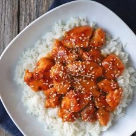

pollo con salsa de naranja
Ingredientes
- 2 pechugas de pollo
- 2 cucharadas de harina para todo uso
- 1 cucharada de fécula de maíz (maicena)
- 1/4 cucharadita de pimienta
- 1 cucharadita de cebolla en polvo
- 1/2 cucharadita de jengibre en polvo
- Aceite para freír (yo usé aceite en spray)
- 1 taza de jugo de naranja
- 1 1/2 cucharadas de fécula de maíz (maicena)
- 4 cucharadas de salsa de soya
- 1 cucharada de vinagre de arroz o el que tenga
- 2 cucharadas de azúcar granulada
Preparacion
- Cortar el pollo en trozos pequeños, luego en un bowl mezclar todos los ingredientes secos, y con esta mezcla agregarla al pollo, unir bien y retirar los excesos.
- Luego en una sartén idealmente antiadherente con un poco de aceite, freír el pollo unos 3 minutos por lados o hasta que esté dorada, una vez listo reservar.
- En un bowl pequeño disolver la maicena con un poco de jugo de naranja y agregar esta mezcla a una olla junto con el resto de los ingredientes de la salsa.
- Cocinar a fuego medio bajo hasta que la salsa tome consistencia.
- Cuando la salsa esté lista mezclarla con el pollo y dejar reposar unos 10 minutos.
- Servir el pollo con salsa de naranja con semillas de sésamo encima si gustan, acompañado con arroz blanco.